Look the Abyss
A first-person horror game I designed and built in Godot 4. The hero props and characters were generated with AI image-to-3D, then cleaned up, decimated and re-lit in Blender, and shipped with a PS1-style render pipeline. Drag the model to rotate it.
From prompt to playable
The pipeline I ran for every asset, and the decisions a supervisor makes at each step.
- Concept & art directionWritten art guide with prompts, palette and a shared style suffix, so every generator stays on one look.
- AI image-to-3DConcept image to a textured mesh with base-colour, metal-rough and normal maps, judged on silhouette and readability.
- Blender clean-upRe-centre pivots, fix scale and orientation, decimate (450k → 50k tris), downscale textures for the target.
- In-engine integrationGodot 4 import, collisions, idle "breathing" animation in code, low render scale + film-grain shader for the PS1 look.
- Audio & 2D with AIAI-assisted ambience, stingers and 2D art, wired to gameplay states (sanity, stare, chase).
The mask in the drawer
A 15-shot vertical cinematic made in Higgsfield. I first built my own animation template in Higgsfield, then directed the piece from it: a shot-by-shot storyboard, one consistent character, and camera language (dolly zoom, push-ins, rack light) planned before generating.
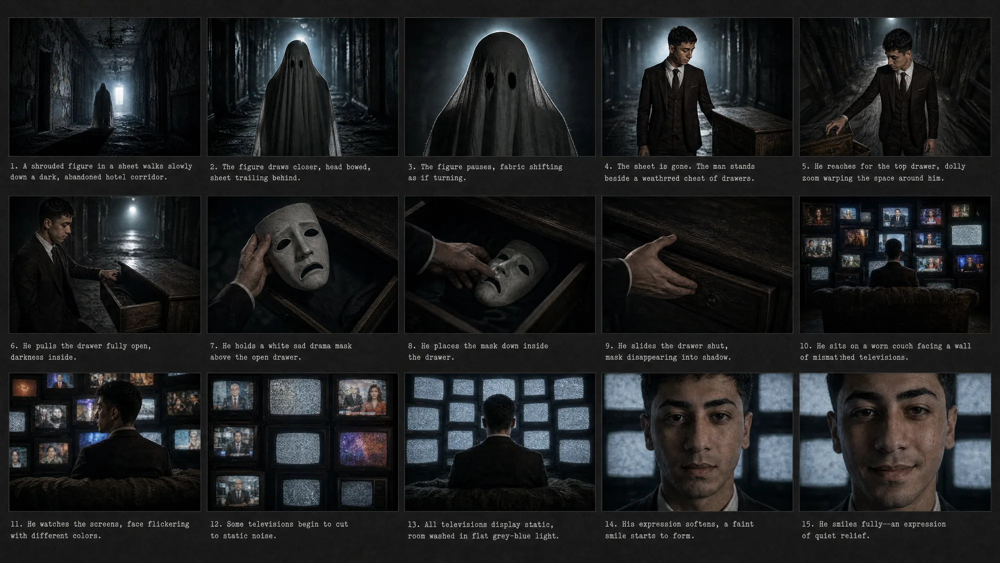
Storyboard · 15 shotsA reusable animation template means the next piece starts from a proven look and motion style, not from zero.
Every shot has an intent written down (framing, motion, emotion) before generating, which is how I keep the character and the light consistent.
9:16, 15 s, hook in the first second. The same storyboard can be re-rendered as 16:9 for trailers.
One text file in.
A finished film out.
I packaged a fully automated illustrated-audiobook pipeline as a reusable Claude Code skill: give it a .txt and it designs a narrator voice, narrates with emotion, plans the scenes, generates consistent characters and renders the final video, all on a single 8 GB laptop GPU.
Character consistency, photoreal
Reference sheet → the same man across 600+ scenes Reference
Reference
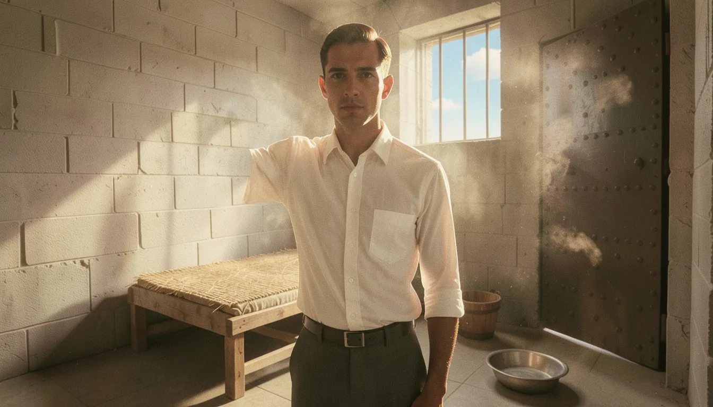
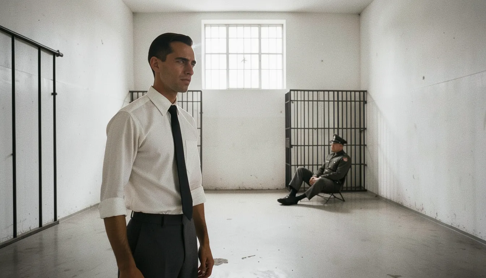
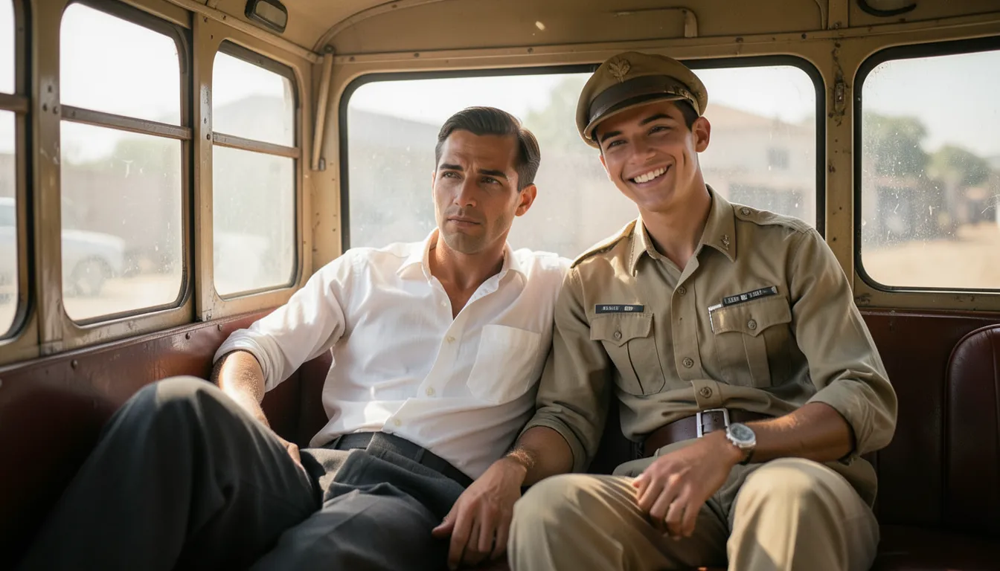
Same pipeline, painterly style
Oil painting + pointillism, 130 scenes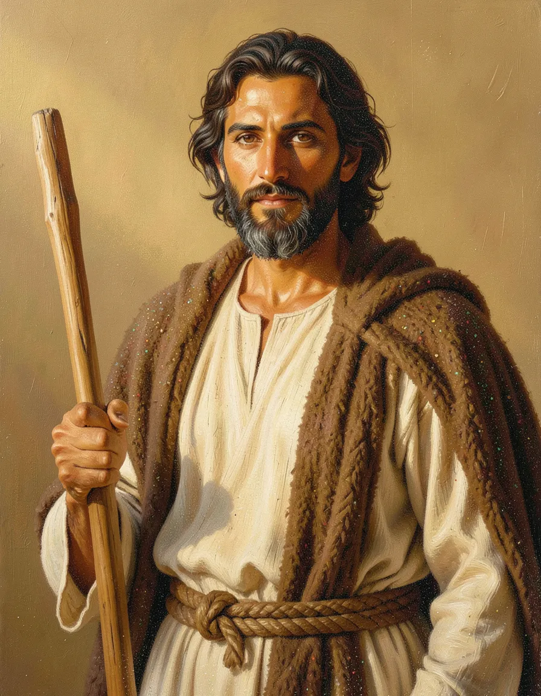
Reference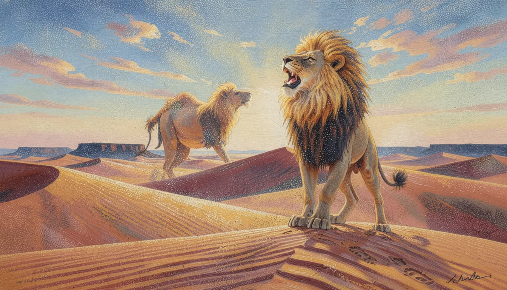


Loops, shorts and films.
Zero hand-drawn frames.
Vertical loops and shorts for social, plus long-form animated explainers where every frame is drawn by code (SVG / canvas + GSAP, rendered with Hyperframes) that I directed with Claude Code. Each book got its own visual bible: mid-century cartoon, illuminated manuscript, cut-paper collage, risograph ink, woodblock print and more, each one a full-length video.
Crayon ghost: a seamless 8-second hand-crayon-style loop built with Claude Code. Made to sit as an idle animation or a social loop.
Rex Dentium: an 18-second vertical piece with a Droste "helix of fangs" zoom, rendered from a single seek-safe canvas function, with every roar and rumble synthesized in code.
From film frames
to a room you can walk in.
A personal study: rebuilding six interiors and exteriors of a 1990s New York film as a VR experience for Meta Quest. Camera poses and geometry were recovered from movie frames, rebuilt in Blender, lightmap-baked and shipped as a Godot OpenXR app with teleport, physical hands and grabbable props.
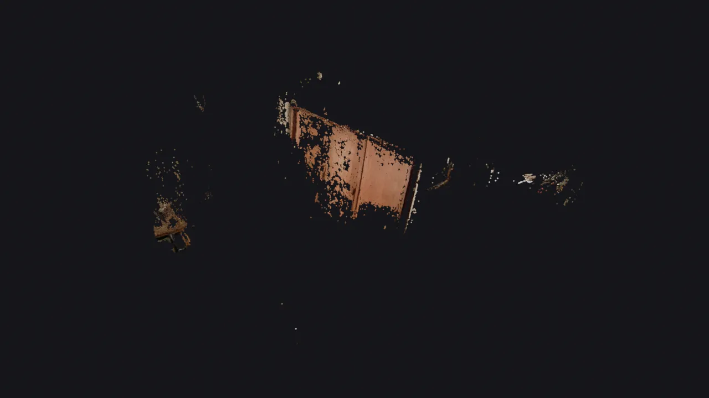

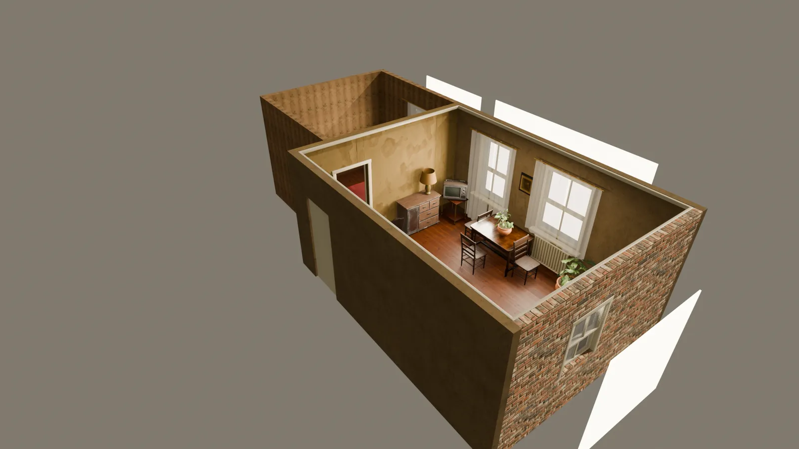

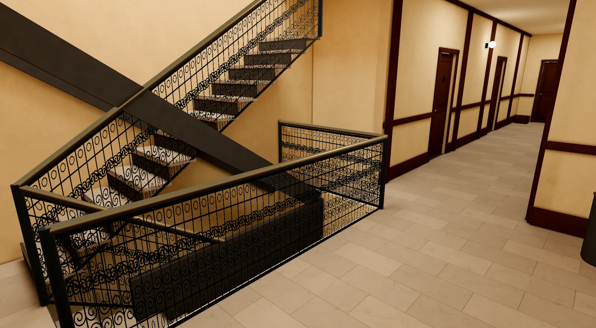


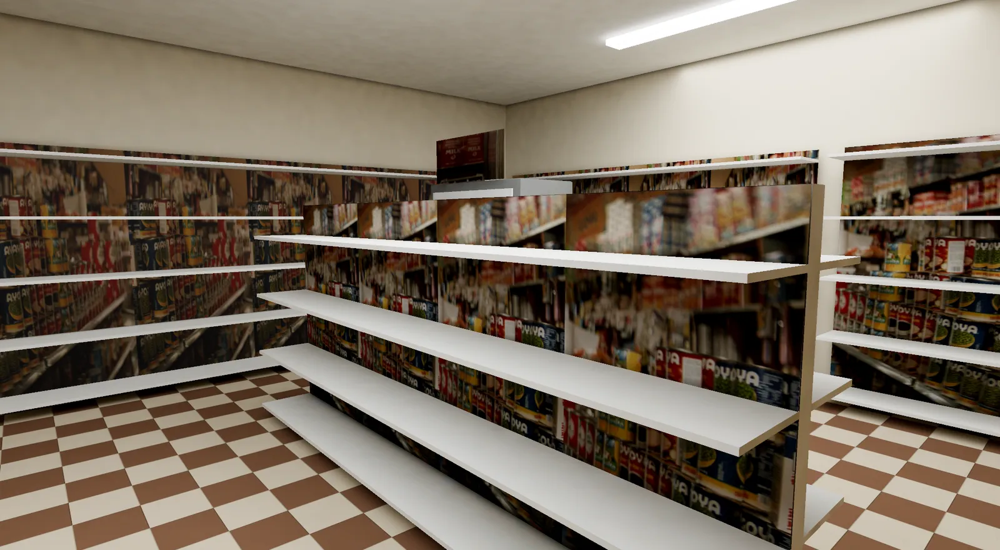


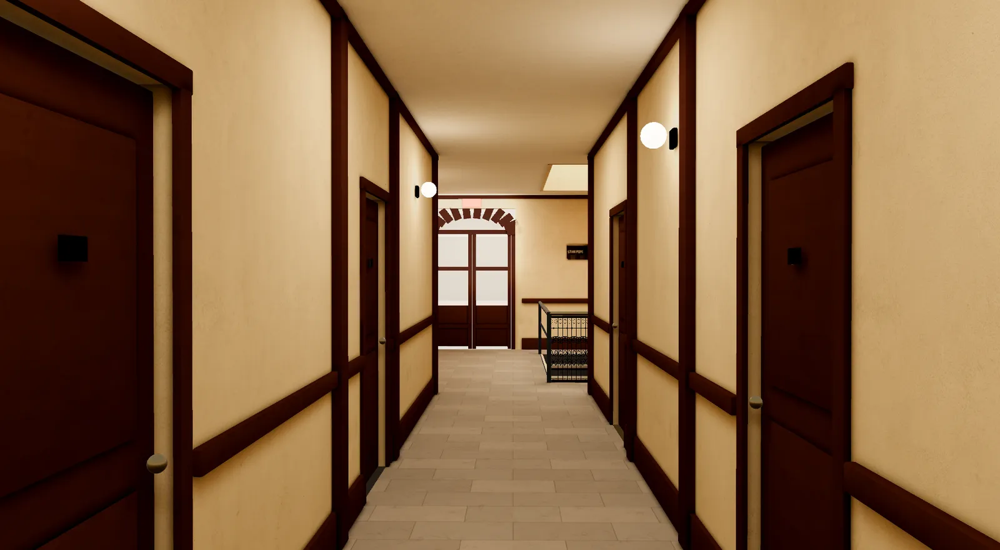
A desktop pet that walks across your screen, and into VR.
Godot 4 app that imports any glTF / FBX / VRM character at runtime and retargets animations between rigs it has never seen (humanoids, dogs, cats) by topology, not bone names. VRM expressions and spring-bone hair, toon shading with soft PCSS shadows on a transparent window, adaptive GPU quality tiers, and a Quest mode with mixed-reality passthrough where you can pet it and pick it up.
I also ship production software.
My day job is software that cannot fail: surgical planning and navigation. That is where the pipeline discipline comes from: tests, reproducibility and validating every output before it reaches a user.
Surgical planning & navigation
3D Slicer product in Python / C++: CT segmentation, 3D-printable surgical guides, real-time tracked navigation, and a new GPU-accelerated X-ray-to-CT registration module with device calibration, live video capture and a simulator for offline validation.
SlicerSPINEPS
Deep-learning whole-spine segmentation (nnU-Net / PyTorch) inside 3D Slicer, with a one-click CUDA installer that matches the user's NVIDIA driver. Submitted to the official Extensions Index.
GitHub →Slicer telemetry platform
Privacy-first usage analytics for 3D Slicer: Qt extension, Flask backend on AWS and a D3.js / Crossfilter dashboard, now live at slicer-telemetry.kitware.com.
Live dashboard →Rental finance app
One Python codebase shipped as an Android APK and as a web app running Python in the browser (Pyodide), on Cloudflare Pages with a Supabase / PostgreSQL backend and row-level security.
What I work with
Frontier models for generation, classic DCC and engines for control, and enough engineering to automate the whole chain.
Generative AI
- Higgsfield (video, templates)
- FLUX.2 klein · ComfyUI
- AI image-to-3D
- Qwen3-TTS (voice design, emotion)
- faster-whisper
- VGGT · YOLO11
Agents & automation
- Claude Code (daily driver)
- Custom skills & MCP servers
- Godot, ComfyUI & Slicer via MCP
- Python pipelines
- ffmpeg
- Headless batch rendering
3D, engines & XR
- Godot 4 (GDScript, shaders)
- Blender (Python, baking)
- OpenXR · SteamVR · ALVR
- COLMAP · photogrammetry
- VTK · ITK · 3D Slicer
- glTF · FBX · VRM · BVH
Code & platform
- Python · JavaScript · SQL
- GSAP · Canvas · SVG
- PyTorch · CUDA
- Supabase · AWS · Cloudflare
- Qt · Flutter · Flet
- Git · CMake · pytest
Path so far
Systems Engineer (UTN, Argentina). Italian / EU citizen based in Como, Italy, and ready to relocate worldwide.
Freelance Software Engineer · Medical imaging & generative media
Surgical planning & navigation for a medical-device client (NDA). In parallel: generative content pipelines, AI 3D assets, the Godot game and the VR projects shown above.
Research Software Engineer · Laboratory for Percutaneous Surgery, Queen's University
End-to-end telemetry platform for 3D Slicer, now hosted by Kitware.
Products & studies · Argentina
Built and sold a banking desktop app (PyQt5 / SQLite / printer protocols). Systems Engineering degree, plus a high-school diploma in Communications, Art & Design.
Need someone to run
your AI asset pipeline?
I am looking for AI Technical Artist, generative pipeline and creative-technologist roles in games and realtime 3D. Remote, or relocating anywhere: London, Australia, across the EU and beyond.